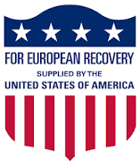

Inceputul razboiului
Confruntarea dintre Statele Unite și Uniunea Sovietică, cunoscută sub numele de Războiul Rece, își are începutul imediat după cel de-al Doilea Război Mondial, dar data oficială este marcată de discursul lui Winston Churchill de la Universitatea din Fulton (Missouri) pe 5 martie 1946. Iată cum s-a desfășurat această perioadă tensionată:
- Winston Churchill atrage atenția asupra situației din Europa de Est, denumind-o "cortina de fier".
- SUA adoptă mai multe măsuri pentru a se distanța de URSS.
- În 1947, generalul Marshall propune un ajutor gratuit pentru Europa pentru a preveni tulburările sociale, însă URSS refuză acest ajutor și îi determină și pe aliații săi din blocul estic să-l respingă, ceea ce duce la separarea Europei.
- Uniunea Sovietică înființează Consiliul de Ajutor Economic Reciproc în 1949, controlând, dirigând și exploatând economiile statelor din blocul său.
- În același timp, se formează două blocuri politico-militare distincte: NATO și Pactul de la Varșovia.
- NATO este creat la 4 aprilie 1949, inițial fiind format din Canada, SUA, Marea Britanie, Franța, Țările de Jos, Danemarca, Norvegia, Portugalia și Islanda, iar ulterior aderă Grecia, Turcia și RFG.
- Uniunea Sovietică protestează împotriva NATO, considerând că este o încălcare a Cartei ONU.
- Pactul de la Varșovia este format în replică, cuprinzând Albania (care se retrage în 1961), Polonia, România, Cehoslovacia și RDG, și servește mai mult ca o forță de menținere a ordinii în blocul comunist decât ca o alianță defensivă împotriva agresiunii externe.

.jpg)